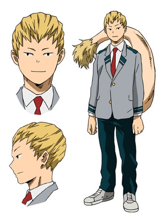

Маширао Оджиро
Маширао Оджиро
- Пол: ♂ Мужской
- Рост: 169 см.
- Возраст: 16
- Группа крови: O
- Родился в: Японии
Маширао Оджиро — студент академии Юэй, также известный как Герой боевых искусств: Человек-хвост. Тренируется, чтобы стать профессиональным героем.
Я знаю, какой шанс мне выпал... и как глупо от него отказываться!... Но все вы потом и кровью заслужили право быть здесь... а я... Понимаете? Стоять рядом с вами и не помнить, как я здесь оказался... Я так не могу.
Внешность
У Маширао блондинистые волосы с необычной линеей роста волос, уложенные назад. У него маленькие глаза без нижних ресниц, мускулистое телосложение и крупный хвост с пушистым кончиком.

В школьное время носит форму академии - белая рубашка, серый с темно-зелеными полосами пиджак, с небрежно расстегнутой нижней пуговицей, красный галстук, темно-зеленые штаны. Но в отличии от своих одноклассников он носит не коричневые туфли, а серебряные кроссовки.
Геройский костюм Маширао - обычной каратэ-ги, завязанное черным поясом, левая часть воротника обшита мехом. Он носит ботинки с пыльно-синими деталями. Перед аркой Предварительного Экзамена на геройскую лицензию, его костюм был немного улучшен, теперь он включает в себя пыльно-синие перчатки без пальцев. Во время совместной тренировочной битвы было добавлено большое пальто к его геройскому костюму.
Личность
У Маширао очень спокойное и благородное отношение, как и очень глубокое чувство собственного достоинства, поэтому он не может принять результаты, полученные, по его мнению, не при помощи его собственных усилий, на свой счет.
Причуда
 Хвост - причуда Маширао дает ему очень сильный и крепкий хвост, который он может использовать его в качестве третьей руки приближая к себе, или атакуя врагов.
Хвост - причуда Маширао дает ему очень сильный и крепкий хвост, который он может использовать его в качестве третьей руки приближая к себе, или атакуя врагов.